Trajectory matrices under different operational modes and loading conditions
Proposal Fig. 2.5. Balanced and phase-C unbalanced loading generate different trajectory-matrix patterns for the same inverter operational mode labels.
Key observation
Under balanced loading, trajectory matrices show clearer mode-dependent patterns.
Under extreme unbalance, the trajectory can shrink and become more sensitive to noise.
The diagnosis method must be robust to both fault mode and loading condition.
Unbalance metric
PCUR = |Iavg − Imin| / Iavg × 100%
PCUR quantifies how strongly the smallest phase-current amplitude deviates from the average phase-current amplitude.
8
Mean-Vector Features Become Fragile Under Unbalanced Loading
Research gap
Mean current vector location in the a–b–c domain
Proposal Fig. 2.6. Under unbalanced loading, mean-vector locations move closer to threshold boundaries and become vulnerable to noise-induced crossing.
Mean-vector feature
μm = 1/N · Σk=1N im(k), m ∈ {a,b,c}
Mean-vector methods use average current displacement as a handcrafted diagnostic feature.
Fault locating often depends on predefined thresholds.
When one phase current is very small, noise can occupy a larger fraction of the feature value.
Threshold crossing becomes unstable under extremely unbalanced loading.
This motivates using trajectory-matrix learning rather than relying only on manually selected mean-vector features.
9
Phase-Based Features Also Fail Under Unbalanced Loading
Research gap
Current-vector phase under balanced and unbalanced loading
Proposal Fig. 2.7 and Fig. 2.8. Phase trajectories are distinguishable under balanced loading, but become distorted and less separable under unbalanced loading.
Key observation
Balanced: healthy and faulty phase behavior remains distinguishable.
Unbalanced: trajectories become distorted and more similar.
This separates fast fault occurrence detection from switch-level fault locating.
14
Why Trajectory-Matrix Learning Preserves Fault Information
Work 1
Feature extraction mechanisms
Proposal Fig. 2.11. Conventional FFT + BN separates feature extraction and classification, while the proposed method learns features and classification jointly.
Key idea
Traditional feature extraction compresses current signals before classification.
Handcrafted features may lose discriminative information under extreme unbalance.
The proposed method preserves the spatial trajectory pattern before CNN learning.
CNN training jointly optimizes feature extraction and classification for the diagnosis target.
Takeaway: The proposed method maintains 100% accuracy across all 22 operational modes without accuracy degradation under 88% PCUR.
17
Online Diagnosis Under Balanced Loading
Work 1 Validation
Healthy mode: current-amplitude step
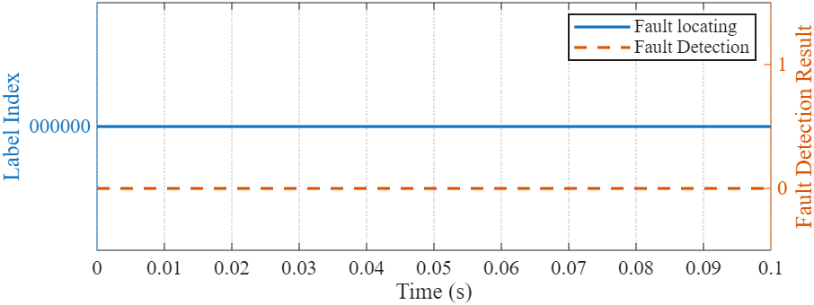
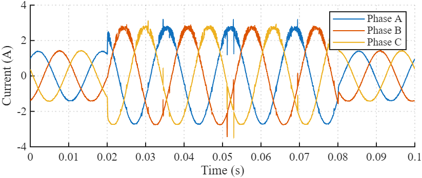
No false alarm during the load transient despite current spikes.
Single-switch fault: Sb1
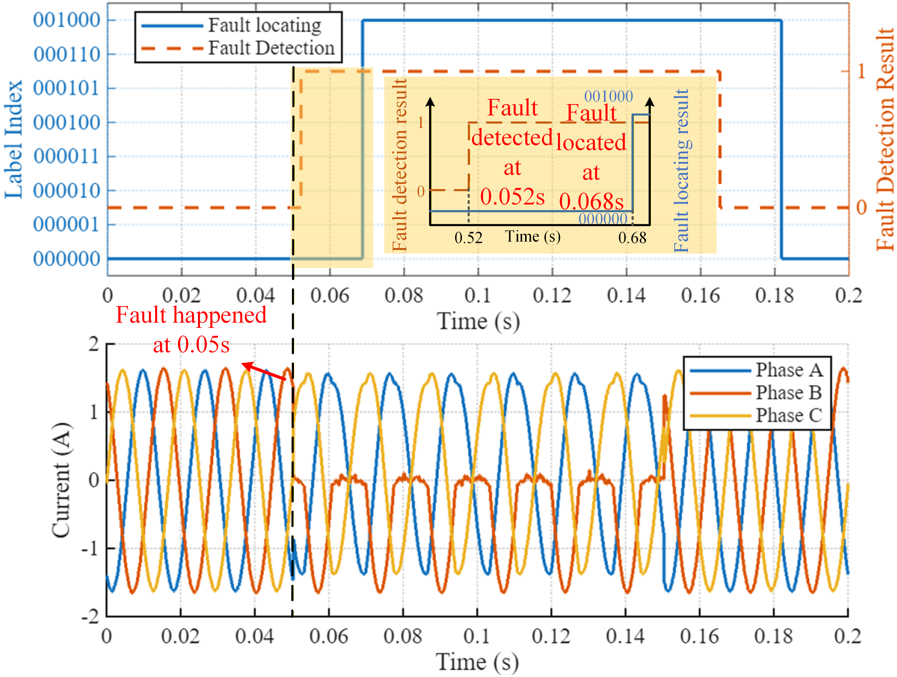
Detected in 2 ms; Sb1 is located within 18 ms.
Double-switch fault: Sb1 and Sc2
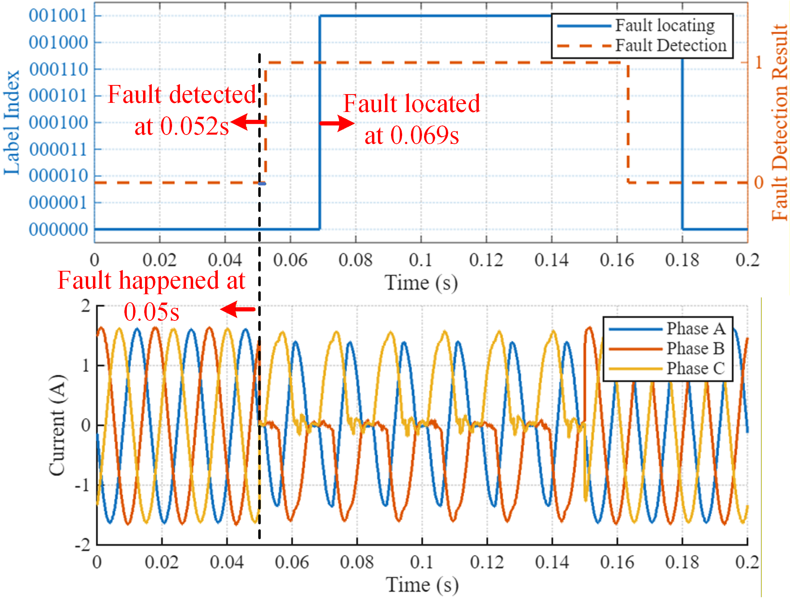
Both switches are located with sub-cycle diagnosis latency.
Takeaway: The proposed method distinguishes load transients from OC faults and continuously diagnoses single- and double-switch faults under balanced loading.
18
Online Diagnosis Under 88% PCUR
Work 1 Validation
Healthy mode: current-amplitude step
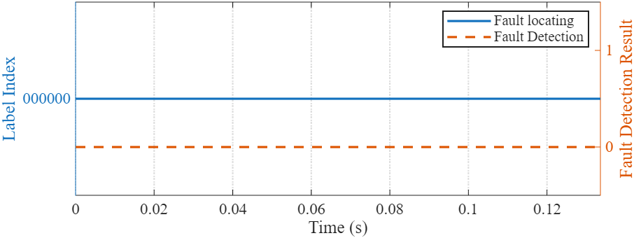
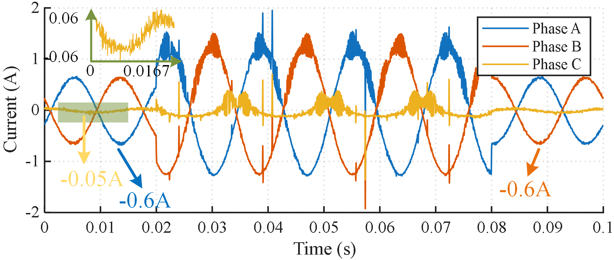
No false alarm despite 88% PCUR and transient current spikes.
Single-switch fault: Sb1
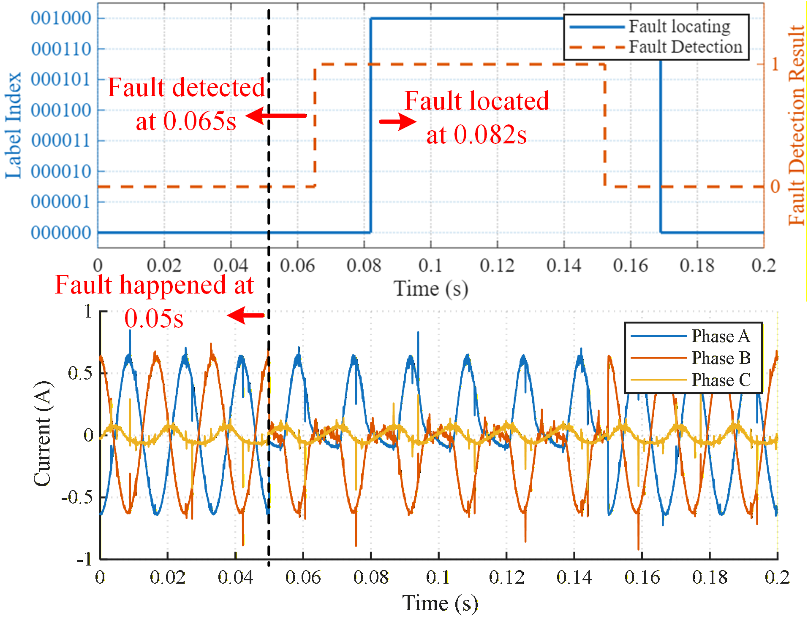
Detected within one cycle; Sb1 is located 0.3 ms after the one-cycle delay.
Double-switch fault: Sb1 and Sc2
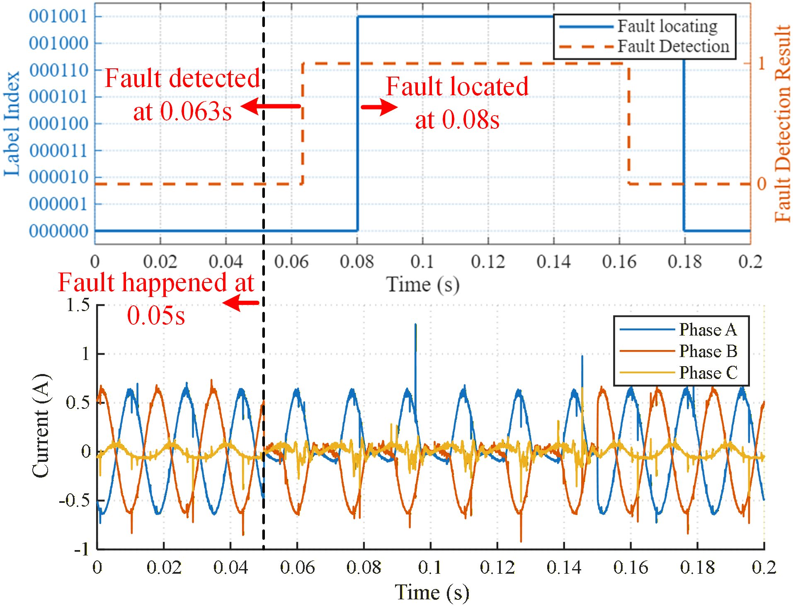
Both switches are located with sub-cycle latency and no false diagnosis.
Takeaway: At 88% PCUR, the proposed method distinguishes extreme load imbalance from OC faults and maintains reliable online diagnosis.
19
Robustness Against Measurement Noise
Work 1 Validation
Offline accuracy: balanced loading
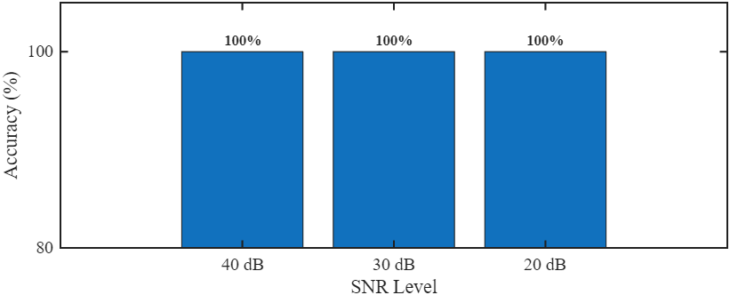
100% at 40, 30, and 20 dB SNR.
Offline accuracy: 88% PCUR
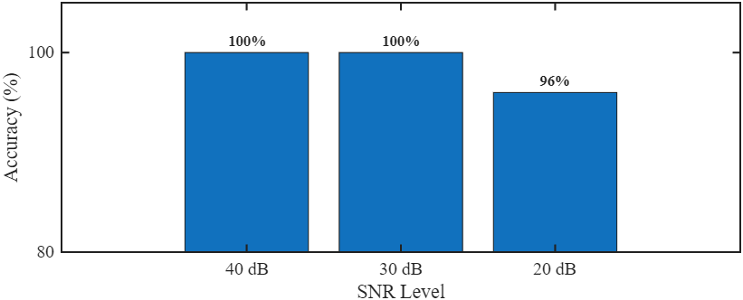
100% at 40 and 30 dB; 96% at 20 dB.
Online diagnosis: balanced loading
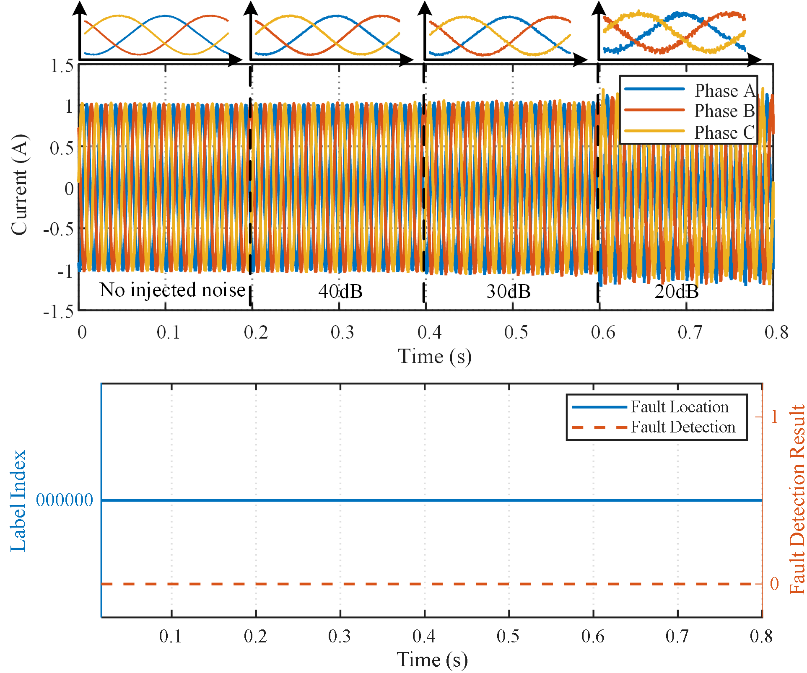
No false alarm as injected noise increases.
Online diagnosis: 88% PCUR
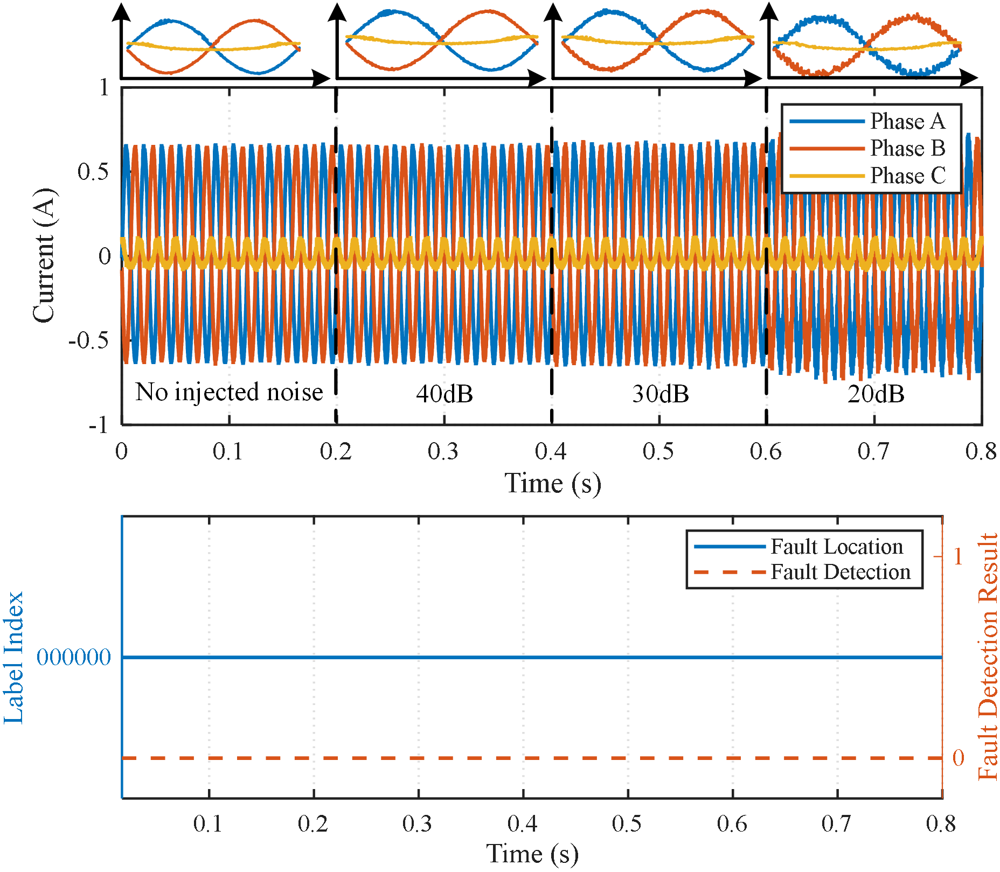
No false alarm under simultaneous noise and load imbalance.
Takeaway: The trajectory-matrix CNN remains robust against measurement noise, including when noise and extreme loading imbalance occur simultaneously.
20
Robustness Achieved, Energy Becomes the Bottleneck
Transition to Work 2
33.06M
MAC operations in the preliminary CNN
This proposal
7.94–337 mJ
per CNN accelerator diagnosis
Prior CNN accelerator studies
500 mJ
per diagnosis on commercial edge devices
Commercial edge characterization
0.12 mJ
per model-based diagnosis
Model-based baseline
Work 1: robustness achieved
100% accuracy across all 22 operational modes at 88% PCUR.
Load transients do not trigger false OC-fault alarms.
Single- and double-switch faults are diagnosed online.
Robustness is maintained under measurement noise.
New challenge: implementation energy
Each diagnosis requires 33.06 million dense MAC operations.
Prior CNN implementations consume substantially more energy than model-based diagnosis.
High-rate inference conflicts with embedded converter power constraints.
Transition: Work 1 solves robustness; Work 2 must preserve diagnosis capability while reducing energy.
21
Where CNN Energy Is Wasted in Sparse Trajectory Matrices
Transition to Work 2
Redundant convolution on zero-valued trajectory regions
Proposal Fig. 2.12. Dense CNN convolution still processes zero regions, while spike-based computation can avoid events where no spikes are generated.
Why this matters here
Each trajectory matrix stores only a small set of active current-vector pixels.
Standard CNN convolution applies kernels over the entire matrix, regardless of sparsity.
Many MAC operations occur on zero-valued or non-informative regions.
This creates unnecessary arithmetic and memory movement for embedded monitoring.
6%of matrix elements are active.
~10%of MAC operations are associated with informative trajectory regions.
This motivates event-driven and spike-based computation in Work 2: compute only where trajectory information exists.
22
From Sparse Trajectory Matrix to Event-Driven Computation
Work 2
Trajectory-matrix spike-rate encoding
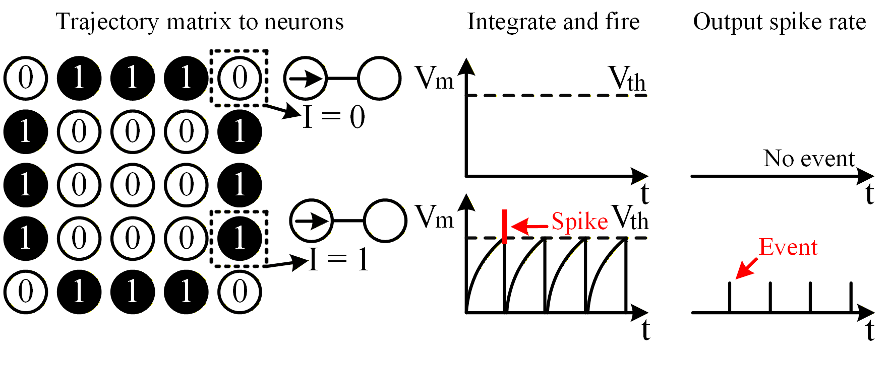
Proposal Fig. 2.14. Binary matrix elements are converted into input currents; active elements produce spike events, while zero-valued elements remain inactive.
Leaky integrate-and-fire neuron
τm = RC
membrane time constant
Vm(t)
membrane voltage
I(t)
input current from the matrix element
Vth
firing threshold
xij = 0 ⇒ I(t) = 0
Inactive region: membrane voltage remains at rest, no spike is emitted, and no downstream computation is triggered.
xij = 1 ⇒ I(t) > 0
Informative region: membrane voltage integrates toward the threshold and generates spike events.
Takeaway: Only active trajectory-matrix elements generate events, allowing SNN computation to follow informative trajectory regions rather than the entire matrix.
23
Spatially Selective SNN Computation
Work 2
Event paths depend on trajectory geometry
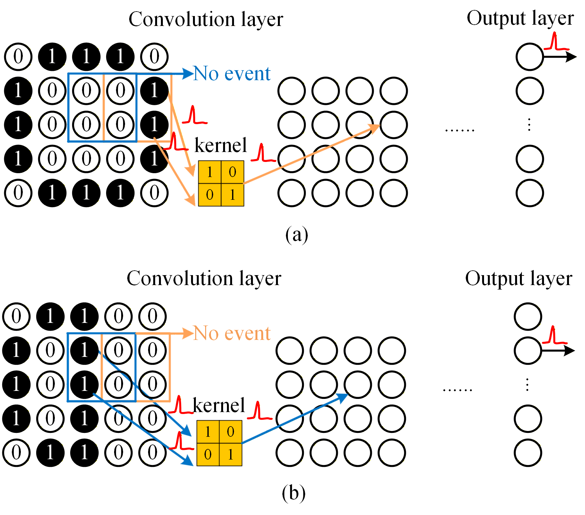
Proposal Fig. 2.13. Healthy and faulty trajectory matrices activate different spatial regions and therefore different output neurons.
Healthy modeCircular trajectory
Only active perimeter pixels generate spikes. Interior zero-valued regions remain inactive, and the healthy output neuron becomes dominant.
OC faultDistorted trajectory
The active spatial path changes with the missing conduction interval, redirecting spike activity toward the corresponding fault neuron.
6%active matrix elements
22output operational modes
Zero-valued regions generate no events; computation follows the current-vector trajectory.
24
CNN-to-SNN Conversion Design Flow
Work 2
1Compatible CNNzero bias · ReLU · no pooling
→
2CNN traininglearn kernels and classifier weights
→
3Neuron replacementReLU → rate-coded LIF neuron
→
4Weight transferCNN weights → synaptic weights
→
5Calibrationselect firing-rate scaling factor
Compatible positive input-output behavior
ReLU activationZero response for negative input; linear response for positive input.
Rate-coded LIF responseApproximately linear above threshold over the calibrated operating range.
Spike activity is insufficient for reliable output-neuron separation.
200–300 Hz80% plateau
The target neuron may still fail to fire at the final time step.
330 Hz100% accuracy
Selected as the minimum tested rate that recovers CNN-level accuracy.
Increasing firing rate beyond the accuracy requirement would add synaptic events without improving classification.
26
Work 2 Data Flow and Model Parameters
Work 2
CNN training and Loihi inference data flow
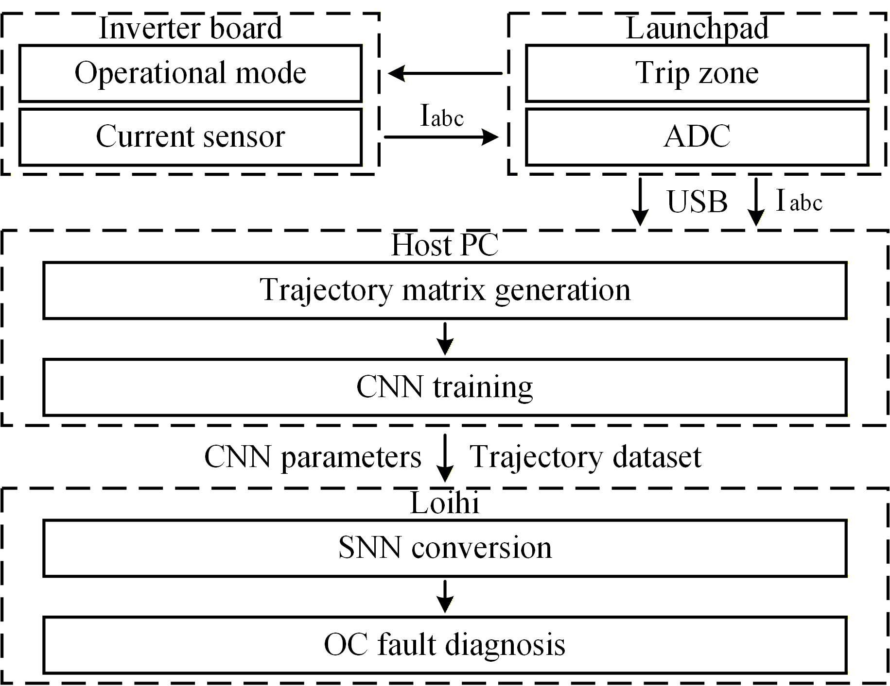
Three-phase currents are converted to trajectory matrices on the host PC. Trained parameters and the trajectory dataset are then loaded onto Loihi.
CNN/SNN architecture and training parameters
Parameter
Value
Convolution layer 1
3×3, stride 1, 32 filters, same padding
Convolution layer 2
3×3, stride 1, 64 filters, same padding
Convolution layer 3
3×3, stride 1, 128 filters, same padding
Learning rate
3×10−4
Firing-rate scaling
330 Hz
Mini-batch size
16
Epochs
10
Output classes
22 operational modes
Current implementation: Loihi does not support real-time streaming in this setup; trajectory matrices and trained parameters are pre-loaded for offline inference.
27
How the SNN Produces an Operational-Mode Prediction
Work 2
Output-neuron probabilities for a healthy trajectory matrix
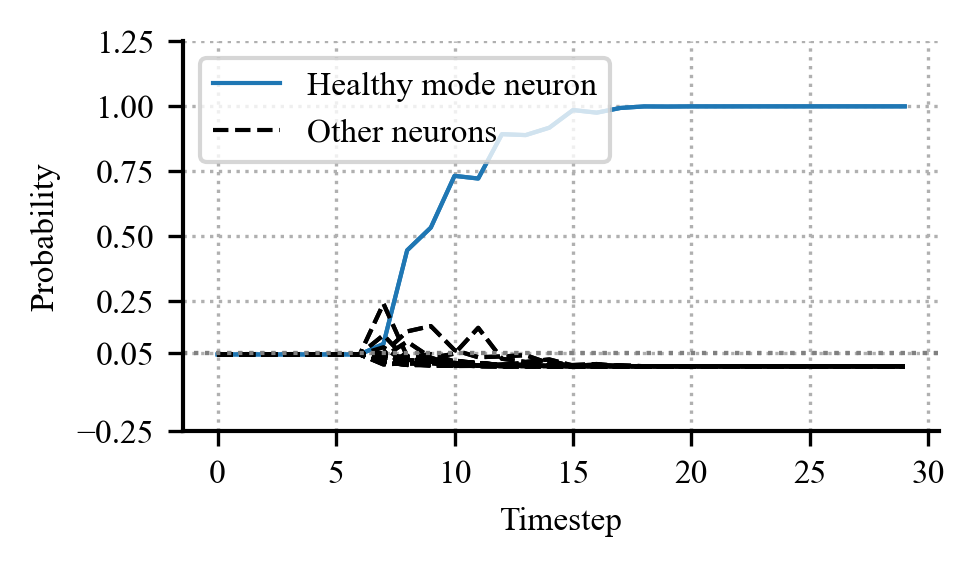
The healthy-mode neuron becomes dominant as spike activity propagates through the network.
Timesteps 0–6Insufficient evidence
All output neurons remain near the same baseline probability.
Timesteps 7–16Spike-path separation
The healthy-mode neuron accumulates stronger activity than the other 21 neurons.
Final timestepOperational-mode decision
The healthy-mode probability reaches 1 while the competing outputs are suppressed.
Select the output neuron with the largest final-time probability.
28
GPU Power Logging and Loihi Energy Estimation
Work 2
GPU power during training and ten rounds of offline testing
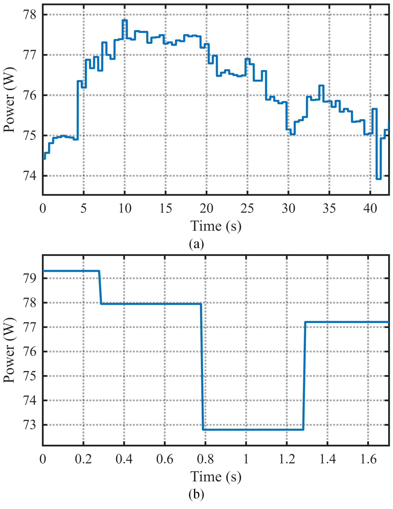
The repeated test extends the measurement interval and increases the number of 100 ms power samples.
GPU-based methods
Log power with nvidia-smi every 100 ms.
Subtract 3.6 W average idle power.
Integrate net power using the trapezoidal rule.
Repeat testing ten times and average the result.
Loihi SNN
Estimate synaptic energy from recorded spike count and 23.6 pJ per spike.
Include neuron-state update energy.
Measurement boundary: reported Loihi energy is estimated neuromorphic inference energy, not full board-level system energy.
29
Accuracy and Energy Benchmarking
Work 2
Balanced loading
Methodology
Accuracy
Training energy
Testing energy
Energy/inference
Loihi: CNN → SNN
100%
2844.53 J
0.048 J
1.1×10−5 J
NVIDIA 4060: CNN offline
100%
2844.53 J
18.48 J
4.2×10−3 J
NVIDIA 4060: CNN online
100%
2844.53 J
24.64 J
5.6×10−3 J
NVIDIA 4060: CNN → SNN
100%
2844.53 J
1364 J
0.31 J
NVIDIA 4060: mushroom body
78.32%
2952.11 J
748 J
0.17 J
NVIDIA 4060: WT + CNN
100%
1363.3 J
8.73 J
2.0×10−3 J
NVIDIA 4060: KAN
99.25%
894.89 J
5.15 J
1.2×10−3 J
NVIDIA 4060: TCN
98.48%
831.93 J
5.74 J
1.3×10−3 J
NVIDIA 4060: A-MICNN
99.74%
1537.18 J
6.77 J
1.5×10−3 J
Extremely unbalanced loading: 88% PCUR
Methodology
Accuracy
Training energy
Testing energy
Energy/inference
Loihi: CNN → SNN
100%
3238.78 J
0.048 J
1.1×10−5 J
NVIDIA 4060: CNN offline
100%
3238.78 J
13.42 J
3.0×10−3 J
NVIDIA 4060: CNN online
100%
3238.78 J
23.73 J
5.2×10−3 J
NVIDIA 4060: CNN → SNN
100%
3238.78 J
1682.46 J
0.37 J
NVIDIA 4060: mushroom body
65.47%
2844.71 J
784.53 J
0.18 J
NVIDIA 4060: WT + CNN
93.11%
1929.75 J
12.09 J
2.7×10−3 J
NVIDIA 4060: KAN
95.20%
944.26 J
8.27 J
1.9×10−3 J
NVIDIA 4060: TCN
93.18%
946.18 J
6.03 J
1.4×10−3 J
NVIDIA 4060: A-MICNN
99.12%
2065.48 J
11.67 J
2.7×10−3 J
11 μJper diagnosis
382×less energy than GPU CNN
100%accuracy in both loading cases
30
SNN Robustness After CNN-to-SNN Conversion
Work 2
Balanced current-amplitude step
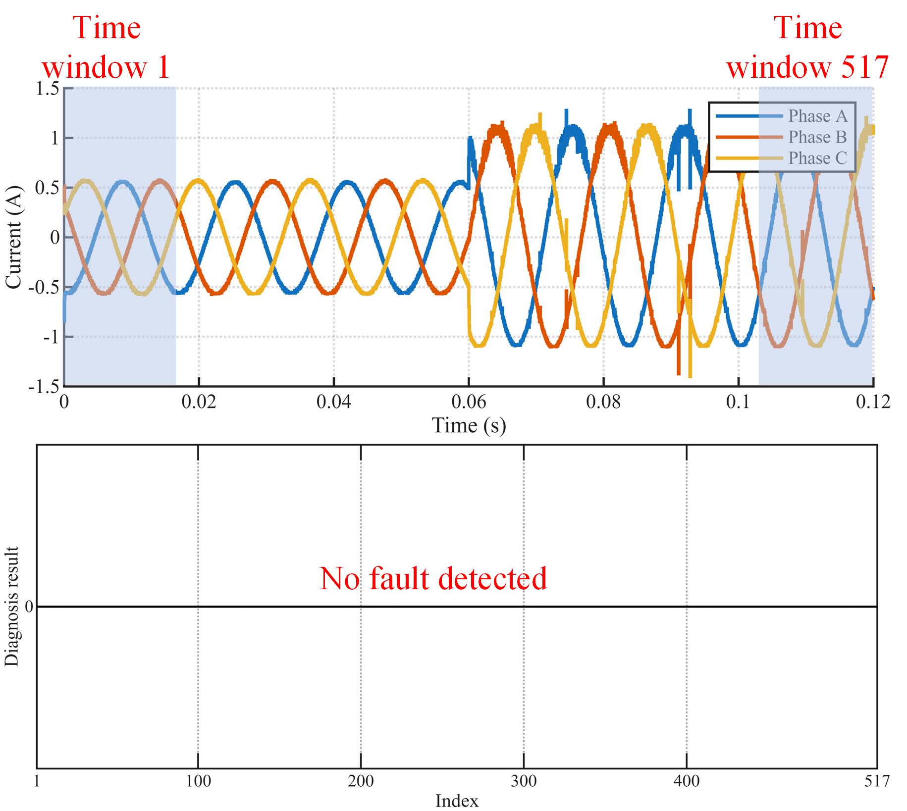
No false diagnosis across 517 sliding-window inferences.
Unbalanced current-amplitude step
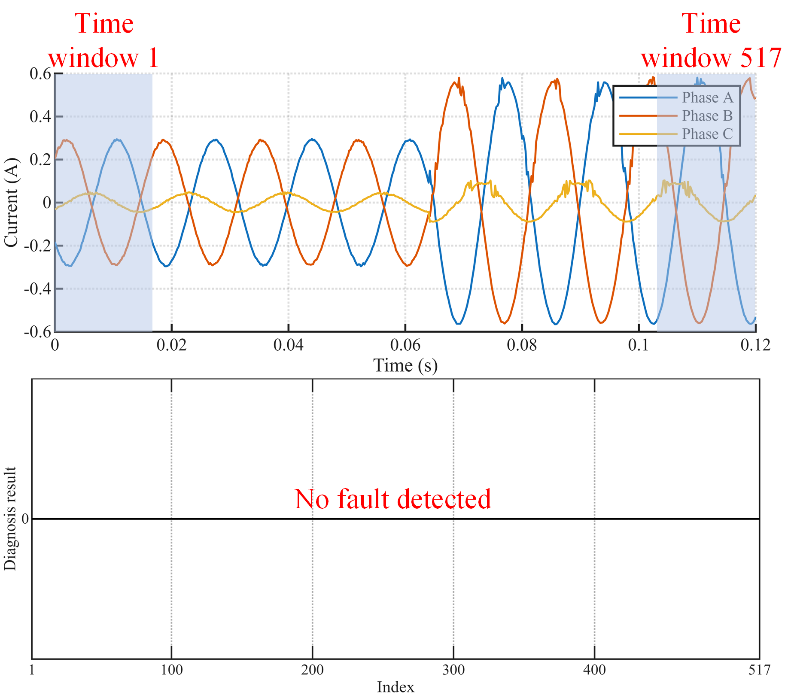
No false diagnosis under simultaneous imbalance and amplitude transition.
White Gaussian noise
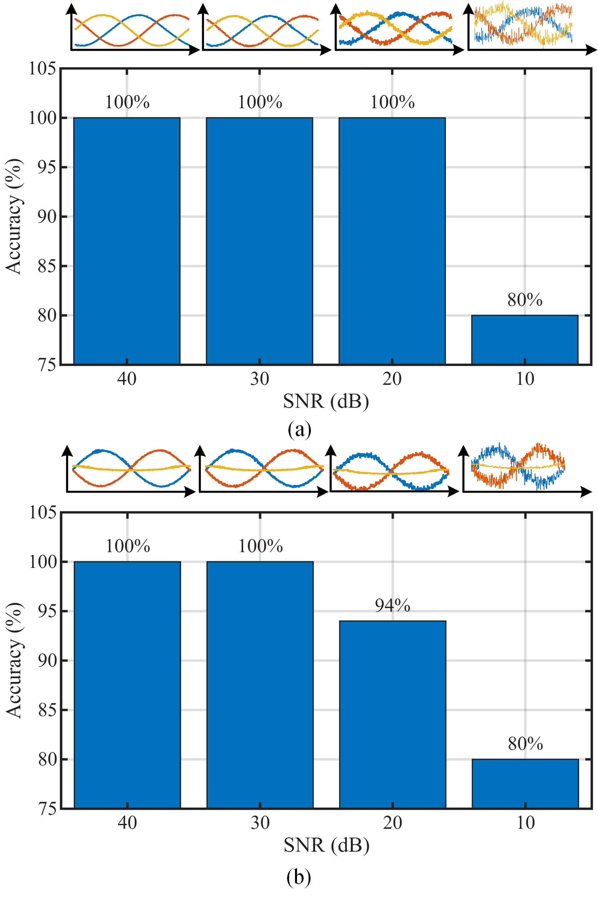
20 dB: 100% balanced and 94% unbalanced accuracy.
Takeaway: CNN-to-SNN conversion preserves robustness against load transitions, extreme imbalance, and measurement noise while enabling low-energy inference.